4 Подсчет плотности объектов по сетке
4.1 Построение сетки
Построим карту плотности распределения объектов по сетке. Для этого нужно будет сначала включить панель инструментов анализа либо через строку меню Вид ⤑Панели⤑ Инструменты анализа, либо Анализ данных ⤑Панель инструментов.
Панель должна появиться в правой части окна программы.
Для начала создадим сетку с помощью инструмента Create grid.
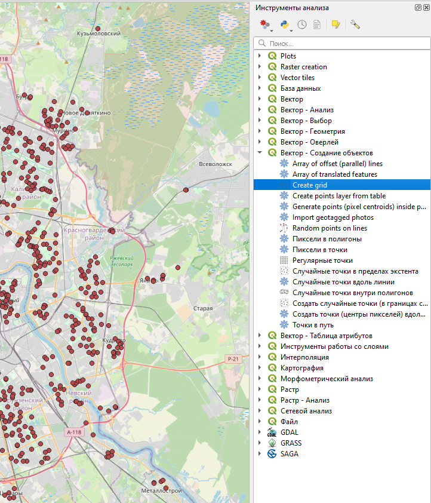
После этого нужно задать параметры сетки.
Сетка может быть создана в виде точек, линий, прямоугольников, шестиугольников и ромбов. Наиболее распространено применение прямоугольной/квадратной сетки и сетки правильный шестиугольников.
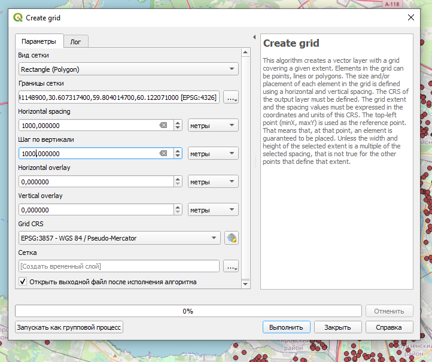
Границы сетки лучше делать по границам того, слоя, который будет впоследствии агрегироваться по этой сетке.
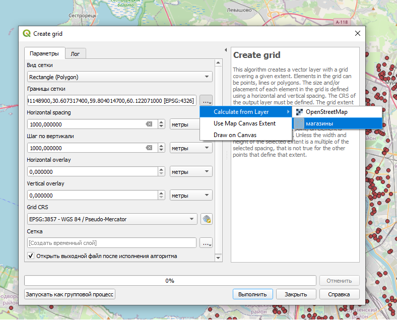
Важно помнить, что выбор размера ячейки сетки является очень важным: если ячейки будут слишком большие, то данные будут чересчур обобщенными, если ячейки будут слишком маленькими, то результат получится слишком дробным.
Также следует помнить, что если вы не сохраните временные файлы, полученные в результате выполнения операции, они будут существовать только в течение текущего сеанса работы. Файлы можно сохранять сразу при задании параметров операции, либо после с помощью команды Экспорт или Сохранить на диск контекстного меню слоя.
В результате будет получена сетка квадратов
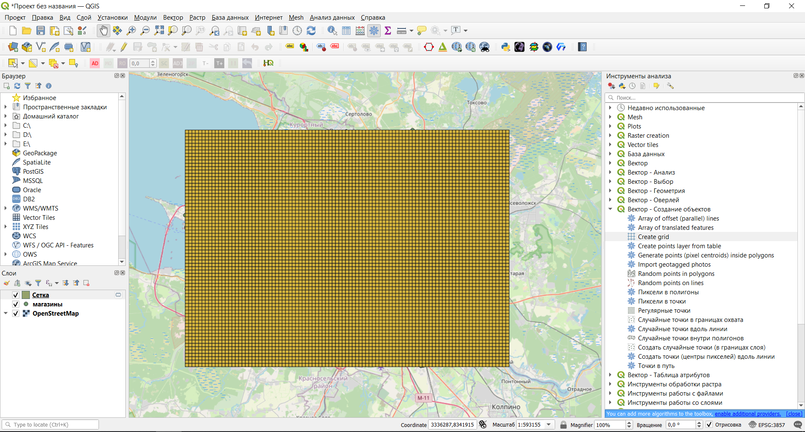
4.2 Подсчет количества объектов
Для того, чтобы посчитать число объектов, попадающих в каждую ячейку сетки, нужно воспользоваться функцией Пространственное соединение (summary).
Операция пространтсвенного соединения необходима для того, чтобы присоединить атрибуты объектов одного слоя к объектам другого слоя с учетом взаимного расположения объектов. Например, присвоить адреса домов объектам, расположенным внутри этих домов.
Пространственное соединение (summary) (в более новых версиях может называться Присоединить атрибуты по пространственному положению (сводка))не просто присоединяет атрибуты, но еще и подсчитывает статистические показатели по исходным атрибутам.
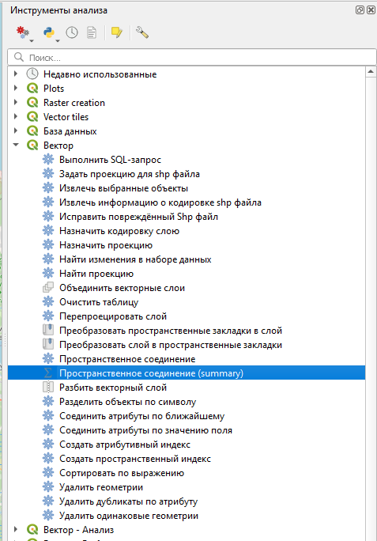
Сначала нужно выбрать исходный слой (тот слой, которому будем приписывать новые атрибуты) и связанный слой (из которого эти атрибуты будут извлекаться), а также геометрический предикат (как объекты разных слоев расположены относительно друг друга).
В нашем случае в качестве геометрического предиката выступает contains, потому что ячейки сетки содержат в себе точки с магазинами.
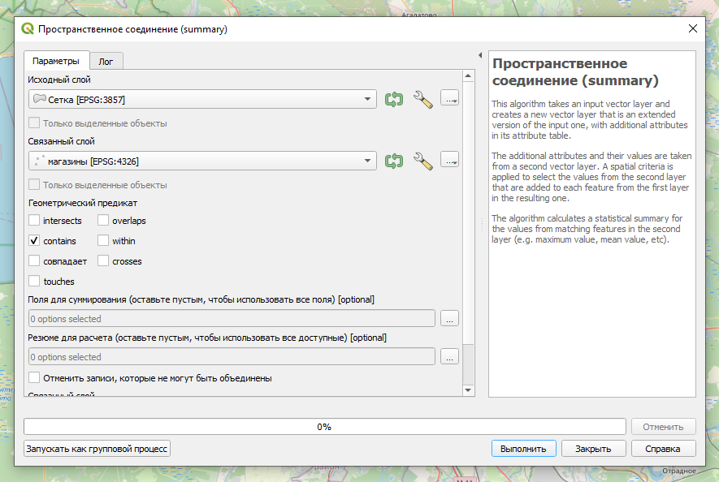
Далее выбираем поля для суммирования. Если не будет выбрано ни одно поле, то будут взяты все атрибуты из связанного слоя. В нашем случае нам достаточно будет атрибута brand.
Далее выбираем резюме для расчета. Если не указать конкретный тип показателя, то программа будет рассчитывать все возможные показатели. Так как мы рассчитываем количество точек, то резюме для расчета нужно выбрать count.
Параметр Отменить записи, которые не могут быть объединены позволяет удалить те объекты исходного слоя, к которым не нашлось подходящих объектов связанного слоя.
Связанный слой лучше сохранить в файл.
Результат соединения (с включенным параметром Отменить записи, которые не могут быть объединены).
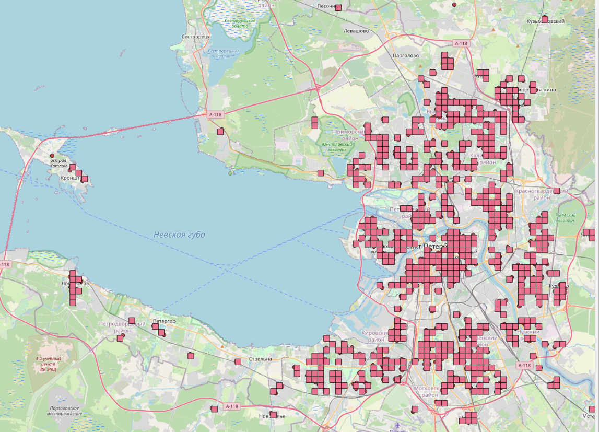
Таблица атрибутов полученного слоя
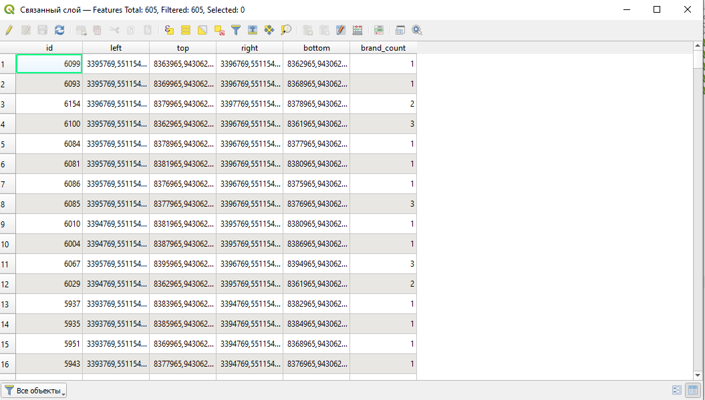
Поля id, left, top, right, bottom были созданы при изначальном построении сетки, а в поле brand_count у нас содержится посчитанное число точек, попадающих в соотвествующую ячейку.
Далее мы можем настроить цвет ячейки в зависимости от числа точек.
Для этого в настройках стиля слоя нужно выбрать Градуированный знак, потом Значение по колонке brand_count.
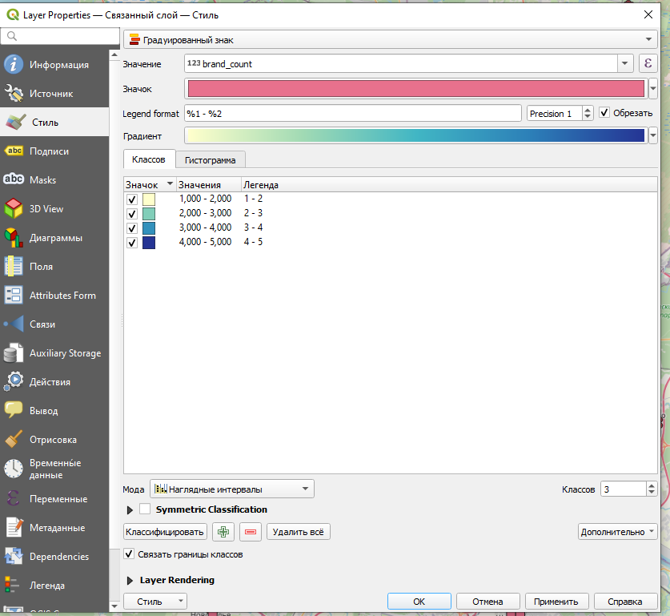
Градиент можно выбрать из предложенных имеющихся или создать самостоятельно.
Для того, чтобы появилось разделение объектов не группы, нужно нажать кнопку Классифицировать.
Для классификации можно менять тип разбивки на группы (Мода) и число классов. Самые широко применяемые методы классификации – естественные интервалы Natural breaks (создают группы так, чтобы разница между ними была максимальной), равные интервалы (весь интервал изменения показателя делится на равные отрезки) и равное количество (квантиль) (при этом типе классификации во всех группах будет одинаковое количество объектов).
Чтобы лучше понять, как осуществилась разбивка на группы, можно перейти во вкладку Гистограмма и нажать Load values. После этого будет построен график распределения объектов по величине показателя и показана разбивка на группы.
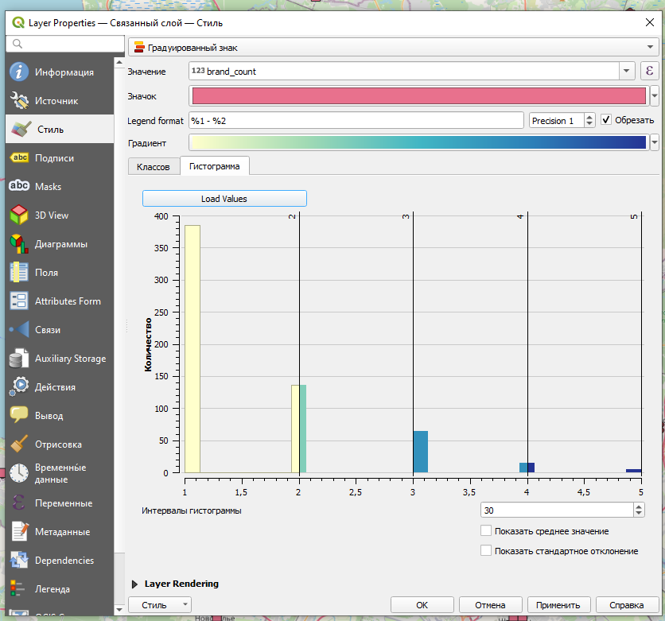
Полученная в результате карта
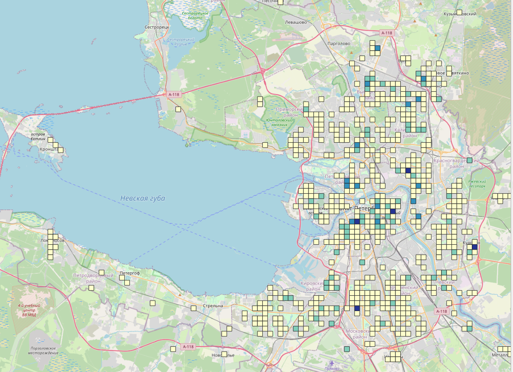
4.3 Стилизация слоя
Полученную карту мы стилизовали «в стиле Lego».
Чтобы это сделать сначала нужно построить центроиды для квадратов сетки (функция Центроиды в панели инструментов анализа), потом этим центроидам задать те же самые настройки цвета, что и квадратам сетки.
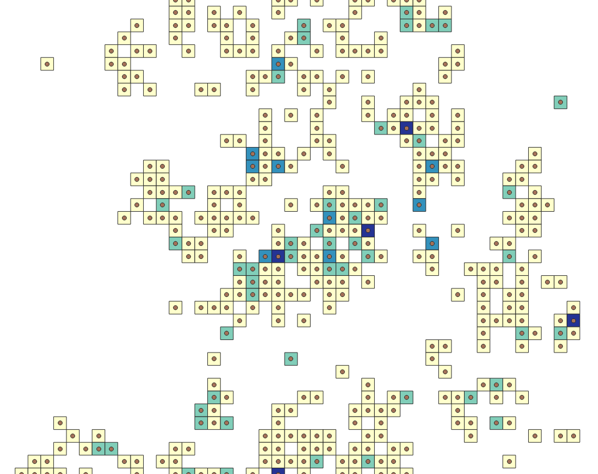
Настроим цвета и размеры символов
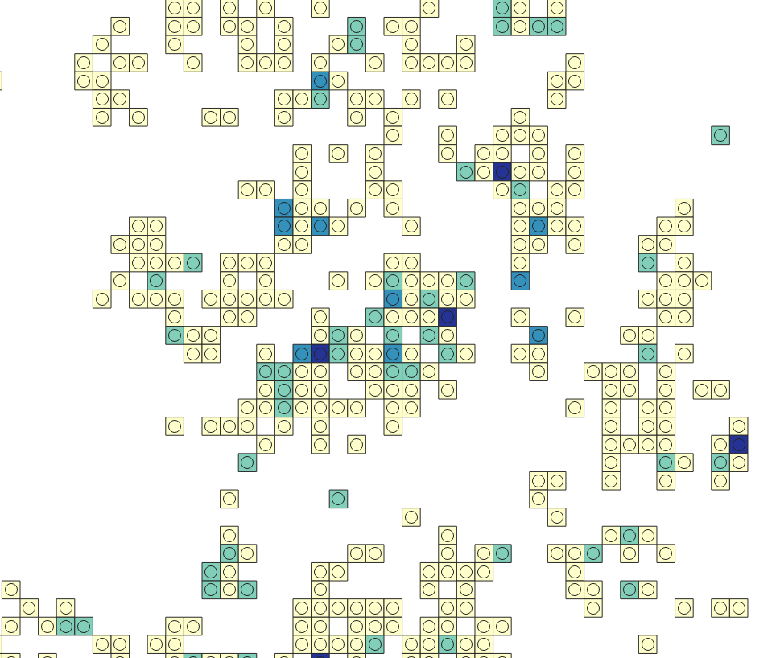
Добавим “тень”. Для этого нужно продублировать слой центроидов, сделать их черного или темно-серого цвета и настроить небольшое смещение.
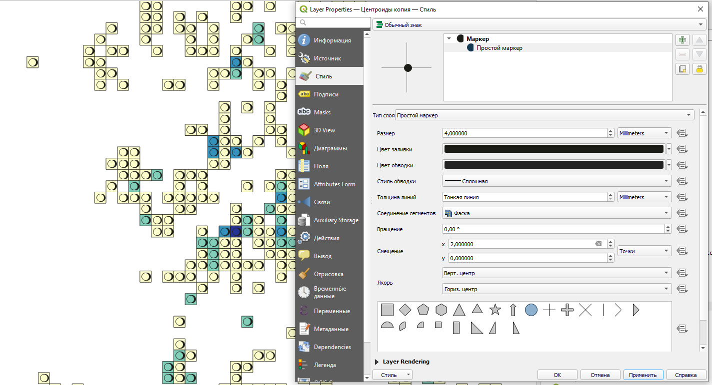
4.4 Оформление карты
Для того, чтобы оформить карту для печати, отчета или документации используют макеты. Макеты являются частью проекта.
Создание макета осуществляется из строки меню Проект⤑Создать макет. Имя макета можно задать самостоятельно или оно будет задано автоматически по умолчанию.
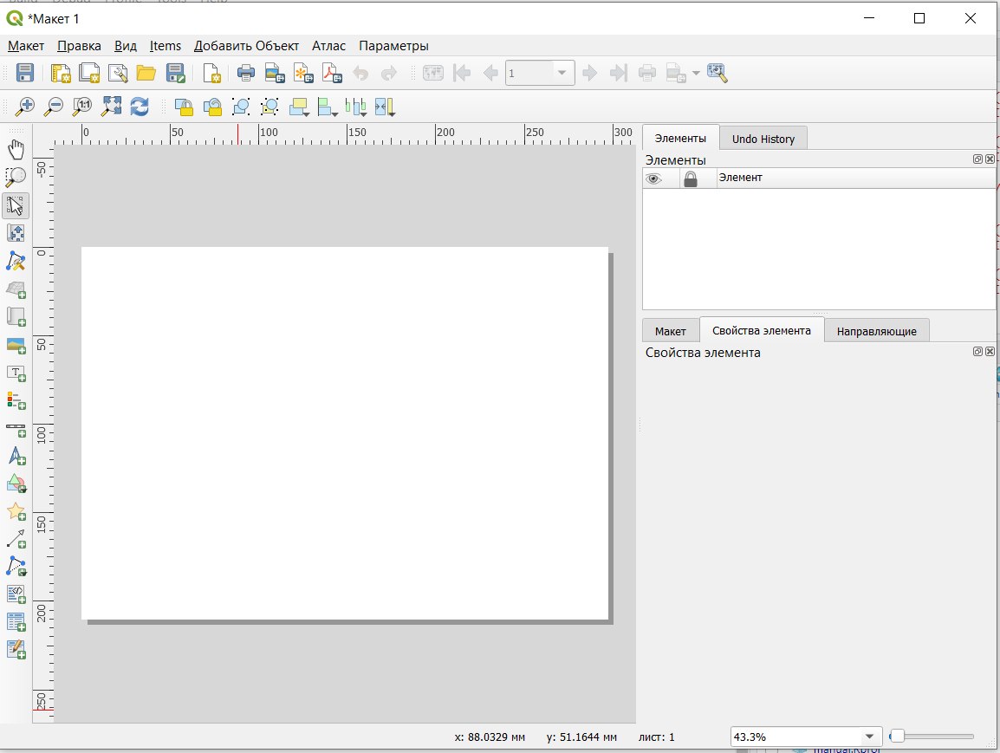
По умолчанию макет создается на листе формата А4 в альбомной ориентации, формат и ориентацию листа можно заменить в параметрах листа.
Слева в окне создания макета расположена панель добавления элементов, справа - перечень элементов и настройки конкретных элементов.
Для того, чтобы добавить на макет карту, нужно выбрать инструмент Добавить карта, щелкнуть на участок на листе, куда карту нужно добавить. В карте отображаются те же слои, которые являются видимыми в проекте, при отключении/включении слоев изображение на макете будет меняться. Чтобы этого не происходило, нужно заблокировать слои в настройках элемента карты.
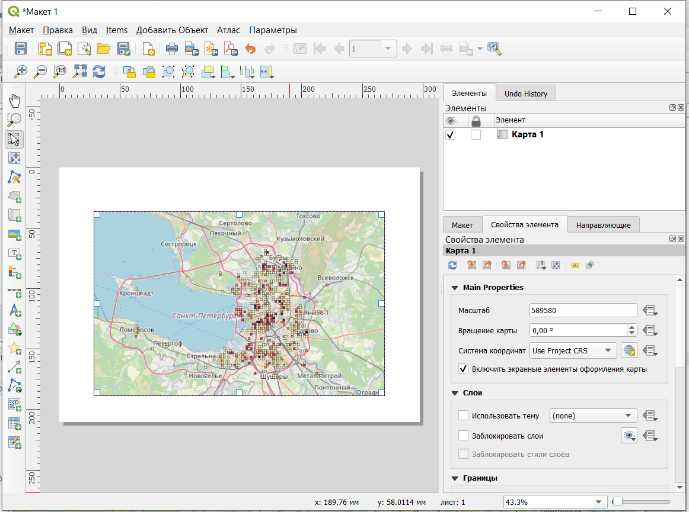
Для карты можно настроить нужный масштаб, угол поворота при необходимости и систему координат.
Другими важными элементами оформления карты являются масштабная линейка и легенда. Эти элементы добавляются соответствующими кнопками на панели добавления элементов и далее настраиваются по необходимости.
В масштабной линейке может быть настроен тип линейки, размер и число отрезков на линейке. Важно помнить, ч то размер отрезков может быть задан как в единицах измерения карты (Фиксированная ширина), так и в единицах измерения листа (Зафиксировать длину сегмента).
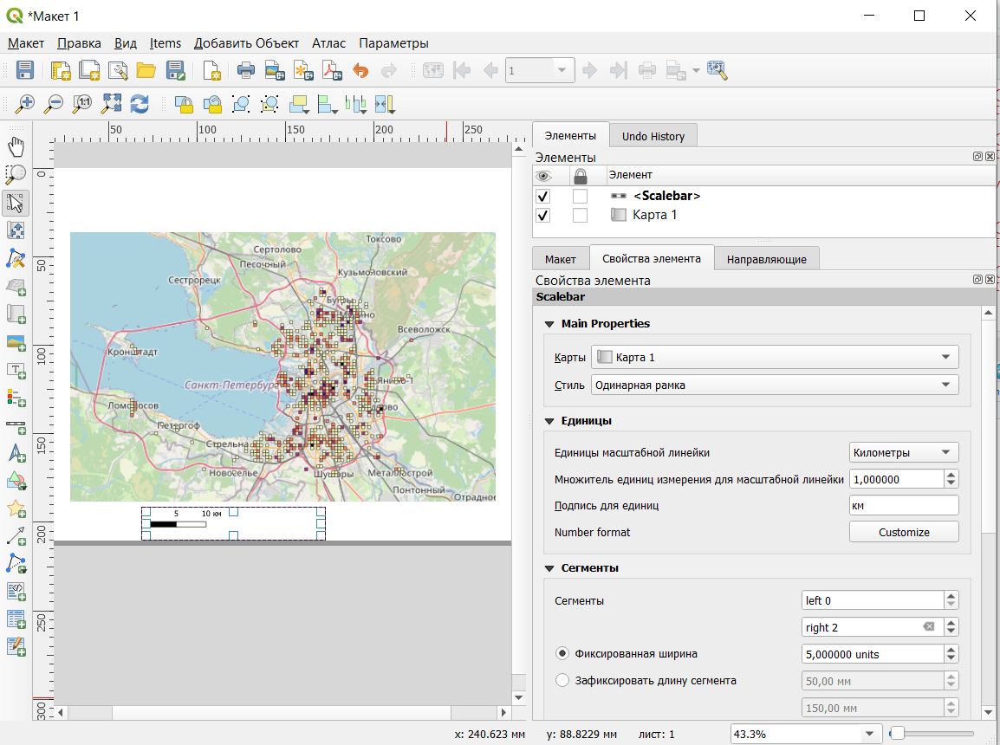
Легенда добавляется по умолчанию с полным перечнем слоев проекта и с теми же названиями как в проекте.
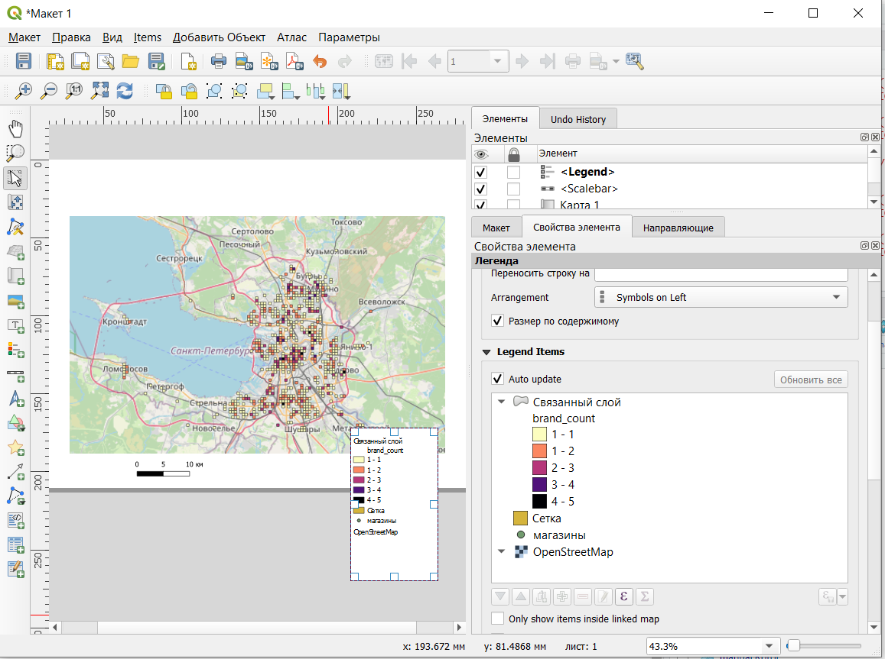
При необходимости можно отключить автоматическое обновление легенды и скорректировать названия слоев и их перечень в легенде.
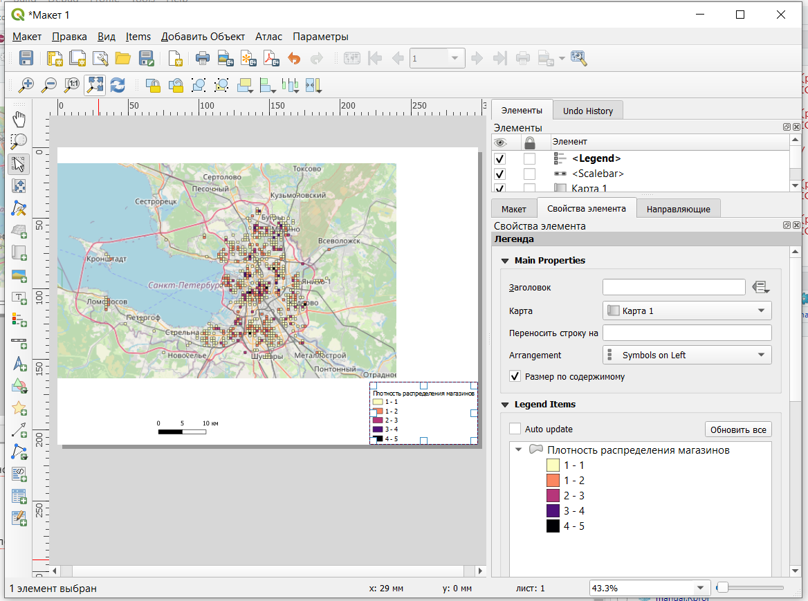
Готовую карту можно экспортировать для печати в формат изображения или pdf.